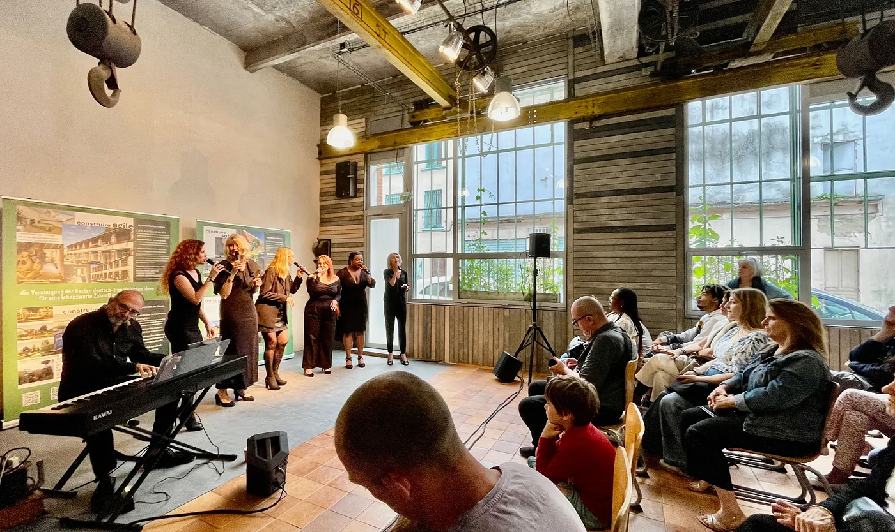

grünboX-Vienne
grünboX-Vienne
 Tiny House Urbaine
Tiny House Urbaine
 Maison Jarret
Maison Jarret
 Logements Caluire
Logements Caluire

grünboX — tiers-lieugrünboX-Vienne
Tiny House Urbaine
Maison Jarret
Logements Caluire

grünboX — tiers-lieuAgence d’architecture à Vienne fondée par Patrick Stefan Rheinert, architecte-ingénieur. 19 projets de 1989 à aujourd’hui.
Des espaces qui s’adaptent.
Des lieux partagés.
Low-tech et réemploi.
Des plantes partout.

Façades plantées, toits verts, serres, aquaponie : des bâtiments qui changent au fil des saisons.